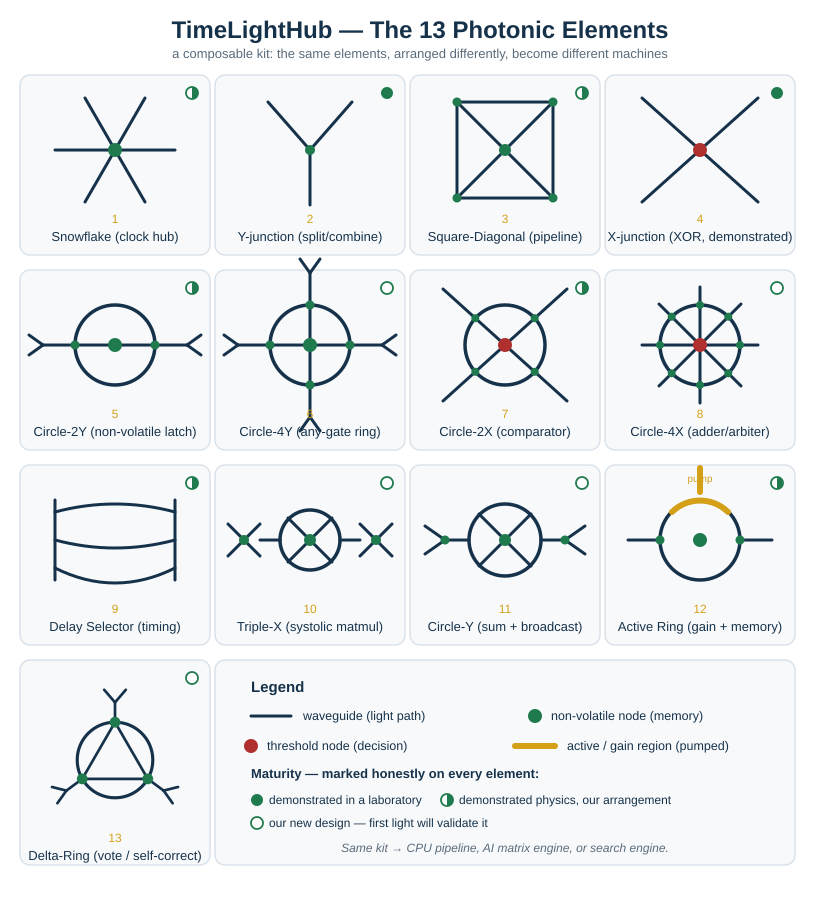

Open research · photonic computing
TimeLightHub
A Composable Photonic Computer That Thinks in Light
Abstract. We present TimeLightHub, a composable photonic computing architecture that computes with light and stores data in light without electrical power. The architecture is built from thirteen integrated photonic elements — including a two-layer non-volatile optical memory node, an in-place-weight systolic matrix-multiply cell whose weights never move, a pumped ring that combines gain, regeneration and memory, and a triangular majority-voting element for self-correction — tiled on a hexagonal “honeycomb” fabric whose shared edges form a hybrid lattice of passive threshold nodes and sparse active gain nodes. The same hardware is reconfigured by the wavelength, phase and timing of light into a CPU pipeline, an AI matrix engine, a non-volatile memory bank, or a search engine. Bounded operations are retrieved by navigating to a stored answer (an optical lookup, the “OmniCube”) rather than computed. We state the architecture’s two open engineering questions — analog precision at depth and the amplifier pump budget — with first-order bounds from a physics-honest simulator, and reduce the energy claim to a single measurable quantity, the energy to read one stored weight, which a defined first experiment measures. The maturity of every element is marked explicitly.
Why this architecture
Computing is hitting a wall made of heat and energy. A high-end AI chip spends most of its power not on computing but on moving data and fighting heat, and its memory leaks power just to remember. TimeLightHub computes with light and remembers with light that needs no power. It is built from thirteen photonic elements that compose — like the sections of an orchestra — into a CPU, an AI engine, or a search engine, all from the same hardware, reconfigured by colour.
- A non-volatile memory made of light — keeps data with the power off, designed as a composable element of a computer. The storage physics (diarylethene photochromism) is demonstrated science; the latch element is ours.
- An AI engine where the weights never move — they live where the light reads them, removing the single largest energy cost in machine-learning inference.
- Self-correcting computation — a three-fold element votes out errors, the way spacecraft computers do.
- A composable element kit with its own language (LUMINA) — one device, many machines, reconfigured by light.
The thirteen elements

Honest status
This is a complete architecture whose every element rests on published science. It is not yet built. Two engineering questions are stated openly — analog precision at depth and the amplifier pump budget — each with a designed answer, a first-order bound from a physics-honest simulator, and a stage that measures it. The energy claim reduces to one measurable number: the energy to read one stored weight.
The one decisive first experiment
Build a single diarylethene optical memory cell — write 375 nm · read 405 nm · reset 532 nm — and measure two numbers: its real readout speed and its switching energy per bit.
That single result is publishable on its own and settles the central open question of the whole architecture. The scope is modest — materials-scale, not program-scale; months, not years — an ideal graduate project, scoped together with the partner. A one-page Phase-1 protocol is available on request.
Looking for: a photonics or photochromic-materials laboratory to build and measure the first cell, and a foundry / MPW partner for the first processing node. The deeper engineering (element-physics dossier, node specification, simulator) is shared under agreement.
Papers and documents
All documents below are the public research record, released under CC BY-NC-ND 4.0. The Zenodo record is the version of record.
White paper + seven technical papers, all figures. 52 pages. Identical to the Zenodo version of record.
Same content as a single self-contained web page with vector figures.
The architecture in one paper: elements, fabric, machines, energy argument, open questions.
One page: problem, idea, what is new, honest status, the first experiment, the ask.
| Record | Identifier | Status |
|---|---|---|
| Zenodo (version of record) | 10.5281/zenodo.22649324 (concept DOI) · v1.0 10.5281/zenodo.22649325 | Published 7 Sep 2026 |
| arXiv preprint | cs.ET · cs.AR · physics.optics — ID pending | Submitted 9 Sep 2026 |
| UK patent application | GB2615417.9 (UK Intellectual Property Office) | Filed 18 Jun 2026 · Patent Pending |
| Author | ORCID 0009-0003-8565-2605 | Samer Beyrouti |
How to cite
BibTeX:
Contact
Samer Beyrouti — Inventor & Architect, TimeLightHub
Connect@TimeLightHub.com · +961 3 097 151 · ORCID 0009-0003-8565-2605
Laboratories, foundries and research partners: a short call is the easiest first step. The Phase-1 protocol and the node specification are available under agreement.